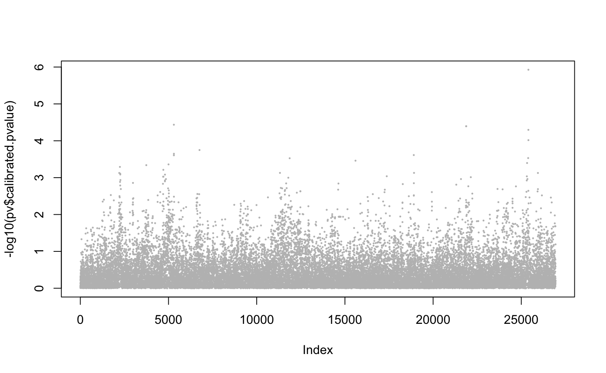

Forward inclusion tests with latent factor mixed models
This function tests for association between each column of the response matrix, Y, and the explanatory variables, X, by recursively including the top hits in the set of explanatory variables. The recursive tests are based on LFMMs with ridge penalty.
forward_test(Y, X, K, niter = 20, scale = FALSE, candidate.list = NULL, lambda = 1e-04)
Arguments
| Y | a response variable matrix with n rows and p columns. Each column is a response variable (numeric). |
|---|---|
| X | an explanatory variable matrix with n rows and d = 1 column (eg. phenotype). |
| K | an integer for the number of latent factors in the regression model. |
| niter | an integer value for the number of forward inclusion tests. |
| scale | a local value, |
| candidate.list | a vector of integers corresponding to columns in Y, and evaluated
as top hits in previous association analysis. If |
| lambda | a numeric value for the regularization parameter. |
Value
a list with the following attributes:
candidates a vector of niter candidate variables (columns of Y),
log.p a vector of uncorrected log p-values for checking (not trustable for testing).
Details
The response variable matrix Y and the explanatory variable are centered.
Examples
library(lfmm) data("example.data") Y <- example.data$genotype X <- example.data$phenotype #scaled variable ## fits an LFMM, i.e, computes B, U, V: mod.lfmm <- lfmm_ridge(Y = Y, X = X, K = 6) ## performs initial association testing using the fitted model: pv <- lfmm_test(Y = Y, X = X, lfmm = mod.lfmm, calibrate = "gif") ## Manhattan plot plot(-log10(pv$calibrated.pvalue), pch = 19, cex = .2, col = "grey")## Start forward tests (3 iterations) obj <- forward_test(Y, X, K = 6, niter = 3, scale = TRUE) ## Record Log p.values for the 3 top hits log.p <- obj$log.p log.p#> [1] 5.927181 4.477862 4.781035## Check perfect hits for each causal SNPs (labelled from 1 to 20) obj$candidate %in% example.data$causal.set#> [1] TRUE TRUE TRUE## Check for candidates at distance 20 SNPs (about 10kb) theta <- 20 ## Number of hits for each causal SNPs (1-20) hit.3 <- as.numeric( apply(sapply(obj$candidate, function(x) abs(x - example.data$causal.set) < theta), 2, which)) ## Number of hits for each causal SNPs (1-20) table(hit.3)#> hit.3 #> 7 16 19 #> 1 1 1## Continue forward tests (2 additional iterations) obj <- forward_test(Y, X, K = 6, niter = 2, candidate.list = obj$candidates, scale = TRUE) ## Record Log p.values for all 5 top hits log.p <- c(log.p, obj$log.p) log.p#> [1] 5.927181 4.477862 4.781035 4.828443 5.300978## Check perfect hits for each causal SNPs (labelled from 1 to 20) obj$candidate %in% example.data$causal.set#> [1] TRUE TRUE TRUE FALSE TRUE## Check for candidates at distance 20 SNPs (about 10kb) theta <- 20 ## Number of hits for each causal SNPs (1-20) hit.5 <- as.numeric( apply(sapply(obj$candidate, function(x) abs(x - example.data$causal.set) < theta), 2, which)) ## Number of hits for each causal SNPs (1-20) table(hit.5)#> hit.5 #> 7 10 14 16 19 #> 1 1 1 1 1## Plot log P plot(obj$log.p, xlab = "Iteration")